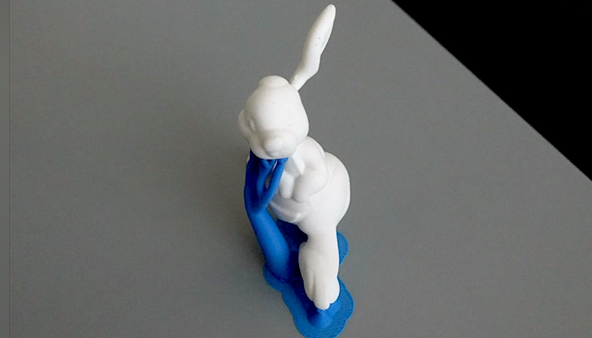
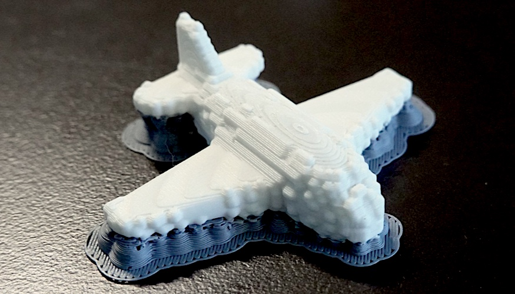

FROM ONE IMAGE TO A PHYSICAL OBJECT
Same input.
A different balance.
Two generated shapes. One shared input.
Remove their supports, then compare
the material left on the scale.
Loading 3D examplesGenerated shape Sliced supports
SIMULATION PENDING
Preparing the paired 3D space…
INTERACTIVE 3D DRAG TO EXPLORE
Support grams and their share of total material appear after collection.
Drag to orbit · Scroll / pinch to zoom · R resets the view
Slicer-estimated material, not physical scale measurements. Support share = support ÷ (model-channel material + support). The model channel includes brim where used; purge and prime-tower material are excluded.
About the animation and numbers
Blue fragments are a lightweight sample of the actual sliced support paths. Breaking, sweeping and collecting them is illustrative; fragments are visually compacted to fit the tray. The displayed grams come from the slicer’s full support and support-interface material estimate, not from the sampled fragments or the animation.
Original print orientations are retained; the poodle orientations differ. The penguin is SAS-only while its baseline is rechecked. The white bodies remain fixed in this preview: remaining upright is not standability evidence. Actual rigid-body simulation is pending and the simulation timer is inactive. Weight data and definitions ↗
PHYSRL3D · SEE THE OBJECTS FIRST
Real prints in motion.
Real prints. Every angle.
Real-print footage, together.
Koala · front view
Real printKangaroo · baseline release
Real print · real timeKoala · back view
Real printKangaroo · further attempts
Real print · real time2 objects · 5 clips / paired views
Drag or scroll sideways
Selected real-print footage is shown here. The timer shows clip playback time, not simulation time. More print photos and measurements ↗
PHYSRL3D · REAL-WORLD FABRICATION
More than looks.
Learning to stand.
Standability. Material efficiency. Geometric fidelity.
Physical objectives, built into the generator.
PhysRL3D: Reinforcement Post-Training of Image-to-3D Generators with Physical Rewards for Real-World Fabrication
Anonymous authors · Under review
Get the highlights.
See the real prints ↗REAL PRINTS · SAME INPUT IMAGERemove the supports.
Remove the supports.
See what stays standing.
HY3D-BENCH · TABLE 2More standable objects.
More standable objects.
Less estimated material.
98.2%
standable rate
84.8% for TRELLIS.2
−11.8%
total material
13.06 g vs 14.81 g
POST-TRAIN ONCEOnly the first stage changes.
Only the first stage changes.
Inference stays the same.
01 · POST-TRAINEDCoarse structure64³ occupancy
02 · FROZENFine shapePretrained refinement
03 · FROZENAppearancePretrained generation
Swipe to explore
INTERACTIVE 3D · SAS AND TRELLIS.2
Turn it.
Take a closer look.
Seven examples to explore. Slide through the inputs, then turn each pair together or inspect one method on its own.
Chair
Select an example to explore in 3D.
Original print orientations and relative dimensions are preserved.
Drag to orbit · Scroll or pinch to zoom · + / − to zoom · R to reset. Red: TRELLIS.2 · Blue: PhysRL3D-SAS.
Meshes are simplified for interactive display and shown in method colours, without their original textures. These shape views are not physics simulations. See support removal and simulation above ↗
HOW IT WORKS
Three objectives.
Standability as the anchor.
The first-stage occupancy exposes the floor contact, mass distribution and overhangs needed to score both physical objectives.
Start where the structure is decided.
Only the first-stage sparse-structure flow transformer of TRELLIS.2 is post-trained. Its fixed decoder produces a 64³ occupancy grid; the later stages retain their pretrained fine-shape and appearance generation.
Three objectives. One occupancy grid.
A centre-of-mass margin rewards standability. A slicer-inspired surrogate accounts for solid walls, sparse infill and overhang supports. Image-conditioned geometry rewards help retain the depicted shape. No simulator or slicer is queried for online reward evaluation.
Standability sets the pace.
SAS compares reward attainment with cached per-image reference levels from the frozen base model. Standability attainment gates the geometry and material weights; their relative attainment gaps determine which receives more emphasis.
Change the generator. Keep inference unchanged.
Group-standardised rewards form advantages for the DiffusionNFT update. SAS changes the reward weights, not the update objective. The architecture and deterministic sampler are retained, with no added inference-time optimisation.
Standability-Aware Multi-Reward Scheduling(SAS)
Standability first. When too few samples reach the base model’s reference level, geometry and material receive reduced weight.
Emphasise what lags. As the standability gate opens, the less-attained of geometry and material receives more emphasis.
These are a schematic explanation of the current method, not measured training curves. Reward fitting uses a one-off slicer calibration; online reward evaluation does not query a simulator or slicer.
QUANTITATIVE RESULTS
Three benchmarks.
The full trade-off.
Among the evaluated methods, SAS has the highest standable rate and the lowest total and support material on all three benchmarks.
Out-of-domain · 625 inputs
HY3D-Bench
98.2%standable rate84.8% for TRELLIS.2
−11.8%total material vs TRELLIS.214.81 → 13.06 g · slicer estimate
| Method | Stand. (%) ↑ | Sim. (%) ↑ | Total (g) ↓ | Total Δ (%) ↓ | Support (g) ↓ | Support share (%) ↓ | CD ↓ | F-score ↑ | CLIP ↑ | KD ↑ |
|---|---|---|---|---|---|---|---|---|---|---|
| TRELLIS.2 | 84.8 | 95.4 | 14.81 | — | 2.92 | 19.7 | 15.32 | 0.954 | 92.84 | 16.40 |
| DSO-DPO | 85.3 | 96.3 | 14.74 | -0.4 | 2.92 | 19.8 | 15.51 | 0.949 | 92.87 | 16.40 |
| DSO-DRO | 85.4 | 95.6 | 14.84 | +0.2 | 2.96 | 20.0 | 15.42 | 0.951 | 92.85 | 16.37 |
| SEG | 85.3 | 96.0 | 14.77 | -0.2 | 2.97 | 20.1 | 15.29 | 0.952 | 92.89 | 16.47 |
| + DensiCrafter | 94.5 | 97.8 | 15.46 | +4.5 | 5.33 | 34.4 | 16.97 | 0.953 | 90.69 | 12.53 |
| PhysRL3D-SAS | 98.2 | 99.8 | 13.06 | -11.8 | 2.29 | 17.5 | 12.78 | 0.981 | 93.73 | 17.53 |
In-domain · 1,992 held-out objects
Objaverse
93.6%standable rate60.1% for TRELLIS.2
−19.2%total material vs TRELLIS.210.81 → 8.74 g · slicer estimate
| Method | Stand. (%) ↑ | Sim. (%) ↑ | Total (g) ↓ | Total Δ (%) ↓ | Support (g) ↓ | Support share (%) ↓ | CD ↓ | F-score ↑ | CLIP ↑ | KD ↑ |
|---|---|---|---|---|---|---|---|---|---|---|
| TRELLIS.2 | 60.1 | 81.4 | 10.81 | — | 2.26 | 20.9 | 33.06 | 0.777 | 87.44 | 9.96 |
| DSO-DPO | 59.0 | 80.6 | 10.41 | -3.7 | 2.37 | 22.8 | 34.11 | 0.764 | 87.50 | 9.94 |
| DSO-DRO | 59.3 | 81.2 | 10.53 | -2.6 | 2.38 | 22.7 | 33.93 | 0.766 | 87.52 | 10.00 |
| SEG | 59.4 | 80.1 | 10.40 | -3.8 | 2.36 | 22.7 | 34.14 | 0.763 | 87.47 | 9.96 |
| + DensiCrafter | 80.7 | 90.3 | 11.54 | +6.5 | 4.24 | 36.8 | 33.20 | 0.786 | 86.25 | 8.60 |
| PhysRL3D-SAS | 93.6 | 96.4 | 8.74 | -19.2 | 1.26 | 14.4 | 32.04 | 0.785 | 88.72 | 10.76 |
Out-of-domain · 174 objects
Toys4K
97.7%standable rate68.6% for TRELLIS.2
−14.7%total material vs TRELLIS.212.93 → 11.03 g · slicer estimate
| Method | Stand. (%) ↑ | Sim. (%) ↑ | Total (g) ↓ | Total Δ (%) ↓ | Support (g) ↓ | Support share (%) ↓ | CD ↓ | F-score ↑ | CLIP ↑ | KD ↑ |
|---|---|---|---|---|---|---|---|---|---|---|
| TRELLIS.2 | 68.6 | 88.9 | 12.93 | — | 2.62 | 20.2 | 48.29 | 0.669 | 85.75 | 5.84 |
| DSO-DPO | 59.0 | 88.5 | 12.88 | -0.4 | 2.98 | 23.1 | 49.31 | 0.648 | 85.70 | 5.84 |
| DSO-DRO | 63.0 | 89.5 | 13.19 | +2.0 | 3.15 | 23.9 | 50.01 | 0.647 | 85.89 | 5.94 |
| SEG | 57.1 | 86.4 | 12.66 | -2.1 | 3.03 | 23.9 | 48.71 | 0.651 | 85.79 | 5.89 |
| + DensiCrafter | 82.6 | 90.0 | 13.35 | +3.2 | 4.06 | 30.4 | 48.68 | 0.669 | 84.85 | 5.21 |
| PhysRL3D-SAS | 97.7 | 97.9 | 11.03 | -14.7 | 1.39 | 12.6 | 52.87 | 0.628 | 86.99 | 7.05 |
A visible trade-off: SAS improves standability and material use, but its CD and F-score trail TRELLIS.2 on Toys4K.
Stand. Component-wise static balance on a 64³ grid. Sim. The separate MuJoCo test used by DSO. Total / Support Mean slicer-estimated grams. Δ is relative to TRELLIS.2.
Fidelity CD (×10³), F-score, CLIP and KD compare against ground truth. KD is a DINOv2 RBF-kernel similarity. HY3D-Bench fidelity excludes 25 multi-object scenes. Best values are bold; second best are underlined.
Training uses 2,000 Objaverse conditioning images for 80 epochs. Means cover three training seeds for post-trained methods, or three generation seeds for TRELLIS.2 and DensiCrafter. The Objaverse evaluation assets do not overlap the training assets.
REAL-WORLD FABRICATION
Beyond the screen.
On the table.
Selected real objects, printed on a Bambu Lab H2D and inspected after support removal. These demonstrations complement the benchmark; they are not a claim that every individual print is lighter.
Bambu Lab H2D, PLA, the slicer's default tree supports and 15% infill; white = object, blue = support. Weights are read from a kitchen scale with 1 g resolution, with the supports attached and after removing them.
One example, all its evidence.
Choose a group to see its input, methods, support photos, footage and weights.
Kangaroo · group 1 of 3
EXAMPLE 01 · PAIRED REAL PRINTS
Kangaroo: TRELLIS.2 falls over once its supports are removed
Both prints use about 2 g of support. After removal, the TRELLIS.2 kangaroo falls over and the PhysRL3D-SAS kangaroo stands. The SAS body is heavier: 15 g against 11 g.
TRELLIS.2

with supports supports removed
supports removedPhysRL3D-SAS
 with supports
with supportsTwo additional baseline release clips
Measured print weights
| Method | With supports | Body | Supports | After removal |
|---|---|---|---|---|
| Kangaroo, TRELLIS.2 | 13 g | 11 g | 2 g (15%) | falls over |
| Kangaroo, PhysRL3D-SAS | 17 g | 15 g | 2 g (12%) | stands |
EXAMPLE 02 · PAIRED REAL PRINTS
Koala: both stand; PhysRL3D-SAS prints a lighter body

Both koalas weigh 22 g with their supports and both stand once the supports are removed. The PhysRL3D-SAS body weighs 17 g against 19 g for TRELLIS.2, but its supports weigh 5 g against 3 g.
TRELLIS.2
 with supports
with supports supports removed
supports removedPhysRL3D-SAS
 with supports
with supportsMeasured print weights
| Method | With supports | Body | Supports | After removal |
|---|---|---|---|---|
| Koala, TRELLIS.2 | 22 g | 19 g | 3 g (14%) | stands |
| Koala, PhysRL3D-SAS | 22 g | 17 g | 5 g (23%) | stands |
EXAMPLE 03 · MIXED EVIDENCE, LABELLED BELOW
Airplane: simulation and a physical print

The TRELLIS.2 airplane is shown through archived before/after rigid-body simulation states, not a physical print. Tipping in this test does not establish that a shape cannot be printed. The PhysRL3D-SAS airplane prints with 2 g of supports (6 g object) and rests flat once they are removed.
TRELLIS.2
 simulation, at release
simulation, at release simulation, after release
simulation, after releasePhysRL3D-SAS

with supports supports removed
supports removedMeasured print weights
| Method | With supports | Body | Supports | After removal |
|---|---|---|---|---|
| Airplane, TRELLIS.2 | not printed; simulation only | – | ||
| Airplane, PhysRL3D-SAS | 8 g | 6 g | 2 g (25%) | rests flat |
These selected objects were scaled to 100 mm. Scale resolution: 1 g. Do not compare these measured values directly with Table 2’s slicer estimates.
SCOPE & EVIDENCE
A few important distinctions.
Does simulator-free mean no simulation anywhere?
No. Online reward computation during post-training does not query a simulator or slicer. Evaluation separately uses the MuJoCo test of DSO and a fixed slicer profile. The qualitative Blender rigid-body demonstrations are another, distinct test.
What does material use include?
Table 2 reports slicer-estimated total material, including the object and its disposable supports, under a fixed profile. These estimated grams are not kitchen-scale measurements. The training material surrogate ranks candidates; it is not an exact predictor of printed mass.
Does every printed object use less material?
No. The benchmark averages show lower slicer-estimated material. The selected physical prints in the paper demonstrate fabrication and standing after support removal, but can weigh more: some TRELLIS.2 shapes are incomplete, and the SAS bridge was printed larger.
What does SAS improve over fixed weights?
It balances the trade-off rather than minimising every metric. On HY3D-Bench, fixed weights save 12.8% material and reach 97.5% standability with CD 13.18; SAS saves 11.8%, reaches 98.2% and lowers CD to 12.78.
Is fidelity better on every metric?
No. PhysRL3D-SAS has the best CLIP and KD scores on all three reported benchmarks, but its Chamfer distance and F-score trail TRELLIS.2 on Toys4K. Both gains and trade-offs are retained in the results table.
What are the current limitations?
The paper evaluates post-training only on TRELLIS.2 and assumes uniform material and a single rigid body. Articulated and multi-material objects remain future work. The standability metric checks connected components separately; static balance is not a guarantee of general mechanical strength or printability.
FROM THE CURRENT MANUSCRIPT
Abstract
Image-to-3D generators synthesise detailed and visually plausible objects from a single image. When such objects are 3D printed, they must also stand on their own in the generated pose and use little material, including the support beneath their overhangs. Existing generators ignore these properties, and physics-aware methods either optimise each object separately or target a single property. Motivated by this, we propose PhysRL3D, a reinforcement post-training framework that builds both requirements into an image-to-3D generator at no inference cost. Specifically, we post-train only the first stage of the generator, whose coarse occupancy governs standability and material use, by online reinforcement learning with simulator-free rewards computed on this occupancy. A centre-of-mass margin scores standability, a slicer-inspired surrogate of walls, infill and support scores material, and geometry rewards preserve fidelity to the input image. We further introduce Standability-Aware Multi-Reward Scheduling (SAS), which balances these competing rewards during DiffusionNFT post-training by using standability as the anchor. On three benchmarks, PhysRL3D stands more objects with less material, including support, than physics-aware baselines, and its real-world prints stand after support removal.
PAPER & CITATION
PhysRL3D: Reinforcement Post-Training of Image-to-3D Generators with Physical Rewards for Real-World Fabrication
Anonymous authors · Under review
Public paper, supplementary PDF and code links will be added when released. No acceptance or publication venue is implied.
Anonymous citation · provisional
@misc{physrl3d,
title = {PhysRL3D: Reinforcement Post-Training of Image-to-3D Generators with Physical Rewards for Real-World Fabrication},
author = {Anonymous Authors},
note = {Under review}
}